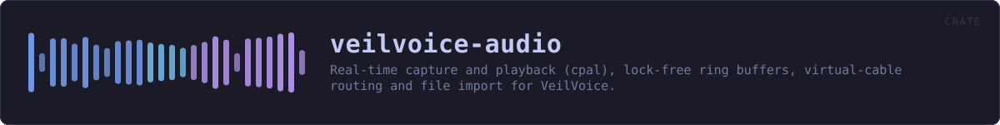

veilvoice-audio
Real-time capture and playback (cpal), lock-free ring buffers, virtual-cable routing and file import for VeilVoice.
reference · the same page on GitHub
Everything between the sound hardware and veilvoice_core(veilvoice-core.html): device enumeration, file import and export, and the real-time capture → de-identify → playback path.
io— decode any common audio file to monof32, write 16-bit WAV, or encode one in memory so it can be encrypted without ever landing on disk in the clear.devices— enumerate inputs and outputs, and spot a virtual audio cable.live— run the engine live between two devices.
The live feature
devices and live sit behind the default-on live feature. They are the only part of this crate that needs cpal, and cpal has no backend for the BSDs. Everything else — decoding, encoding, and running the engine over a buffer — is pure Rust and builds anywhere, so turning the feature off keeps file processing working on platforms that cannot do live capture rather than failing to build at all.
Routing, and why a virtual cable matters
Scrambling a microphone is only useful if other applications can hear the result. Selecting a virtual audio cable as the output makes the veiled voice appear as an ordinary microphone to any call, stream or recorder on the machine, with no per-application setup. devices::find_virtual_cable detects an installed one so the UI can offer it directly.
In plain words
This is the plumbing between your microphone, your speakers and the part that changes the voice.
It finds the sound devices you have, opens the recording you point at whatever kind of file it is, and writes the result back out. For live use it does the whole loop while you talk -- in from the microphone, through the engine, out to whatever else is listening -- fast enough that a conversation still works.
It also reports how loud things are, which is what the level bars in the program are drawing.
HOW THE CRATE FITS TOGETHER
Every arrow is a crate:: or super:: path one module actually uses, read out of the source rather than drawn by hand.
The same graph as Mermaid source
%%{init: {"theme":"base","themeVariables":{"background":"#1a1b26","primaryColor":"#1f2335","primaryTextColor":"#c0caf5","primaryBorderColor":"#7aa2f7","secondaryColor":"#16161e","tertiaryColor":"#16161e","lineColor":"#737aa2","textColor":"#c0caf5","mainBkg":"#1f2335","nodeBorder":"#7aa2f7","clusterBkg":"#16161e","clusterBorder":"#2f3549","fontFamily":"ui-monospace, SFMono-Regular, Consolas, monospace","fontSize":"14px"}}}%%
flowchart TD
n_lib(["lib.rs<br/>222 lines"])
n_devices["devices.rs<br/>243 lines"]
n_io["io.rs<br/>569 lines"]
n_live["live.rs<br/>252 lines"]
n_meter["meter.rs<br/>166 lines"]
click n_lib href "https://github.com/tilas01/veilvoice/blob/main/crates/veilvoice-audio/src/lib.rs" "open the source"
click n_devices href "https://github.com/tilas01/veilvoice/blob/main/crates/veilvoice-audio/src/devices.rs" "open the source"
click n_io href "https://github.com/tilas01/veilvoice/blob/main/crates/veilvoice-audio/src/io.rs" "open the source"
click n_live href "https://github.com/tilas01/veilvoice/blob/main/crates/veilvoice-audio/src/live.rs" "open the source"
click n_meter href "https://github.com/tilas01/veilvoice/blob/main/crates/veilvoice-audio/src/meter.rs" "open the source"This site loads no third-party script, so it cannot run Mermaid; the diagram above is the same nodes and edges drawn by the generator instead. GitHub renders the source below directly.
THE FILES
| File | Lines | What it is |
|---|---|---|
devices.rs | 243 | Enumerating audio devices, and guessing which of them are virtual cables. |
io.rs | 569 | Reading and writing audio files. |
lib.rs | 222 | Everything between the sound hardware and veilvoice_core: device enumeration, file import and export, and the real-time capture → de-identify → playback path. |
live.rs | 252 | Live microphone scrambling. |
meter.rs | 166 | The scale a level meter is drawn on. |